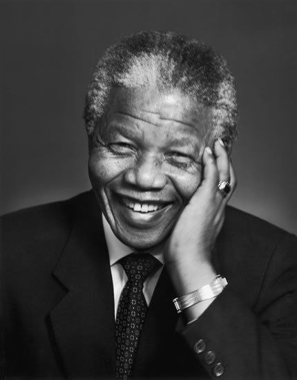
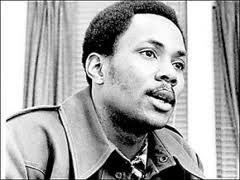

Nelson Mandela
First democratically-elected president of South Africa and anti-apartheid revolutionary.
Malala Yousafzai

Malala Yousafzai decided that if she was about to be killed by a Talib, she would want the last thing she did to be to wish him and his children an education, and to tell him how important education was
Frank Wills
Frank Wills, simply by doing his job as a security guard, brought about the Watergate Scandal.